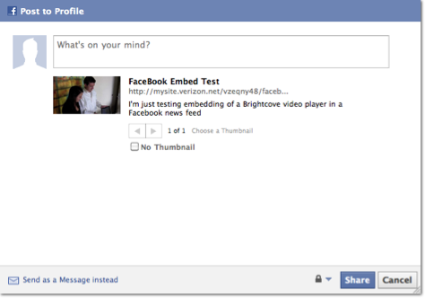

How to add Brightcove video to a Facebook News Feed.
As a Brightcove publisher, you can increase the visibility of your
organization and your content by sharing videos in your News Feeds on
Facebook*. This article will take you through the steps of adding
videos to your Facebook News Feed.
First you will want to create a new player for viral sharing on
Facebook, so that you can adjust the settings to conform to Facebook
guidelines. to turn off advertising and track the performance
separately in your reports. Within the HTML code of your site you can
configure how the metadata will be passed into the News Feed. Full
details on Facebook sharing options can be found here. Once
this is set, a few lines of JavaScript create a button that enables
users to post one of your videos to their Facebook news feed for all of
their friends to see.
I have also created a demo of
this and attached the source code with instructions below.
Prodedure
Create a Player for Facebook Viewing
- In the Publishing Module, create a new player from any of the
single video players.
- Open the Settings for the player.
- If you want to drive viral traffic back to your site, in the
Global Settings, choose the Host on your URL option and insert the URL
for page where you will embed the player.
- In the Video Player settings, check Prevent full screen
functionality to abide by Facebook requirements
- In the Advertising Module, make sure that Advertising is NOT
enabled for the player to abide by Facebook requirements.
Set up a Page to Share the Video on your Facebook News Feed
- Download
this starter file, extract it, and open it in a text editor.
- Edit the meta tags at top of the HTML page to change the content
values for the title and description.
<meta name="title" content="FaceBook Embed Test" />
<meta name="description" content="I'm just testing embedding of a Brightcove video player in a Facebook news feed" />
- Edit the link just below the player, substituting the URL for the
page for u value in the query string:
<a href="http://www.facebook.com/share.php?u=http://files.brightcove.com/facebook_newsfeed.html"
target="_blank" class="fb_share_link style1" onClick="return fbs_click()">Share on Facebook</a>
- Get the JavaScript publishing code for the Brightcove player you
want to use from your account and replace the demo Brightcove player.
- Edit "image_src" and "video_src" in the <link> tags within
the Facebook button code to reference your image and the video player
that you want to be posted in the News Feed. Retain the format of
'video_src' url and add your publisher ID, player ID, and video IDs.
<link rel="image_src"
href="http://brightcove.vo.llnwd.net/d12/unsecured/media/20318290001/20318290001_675312622001_bc5-studio-player-still.jpg?pubId=20318290001" />
<link rel="video_src"
href="http://c.brightcove.com/services/viewer/federated_f9/30183089001?isVid=1&isUI=1&publisherID=20318290001&playerID=674388892001&domain=embed&videoId=407541841001" />
Note that you can
get the URL for the video still using the Player API or the Media API.
- Make any other changes you wish to the content and styling of the
page, as long as you leave the code detailed above intact.
- Save the page and post it to your web site.
- Open the page on your web site, and click the Share on Facebook link.
- Login with your Facebook Credentials and click Share to add the video to your news
feed.

To embed a video in a Facebook Fan page, follow the instructions
here.
*Note: Be sure to abide by Facebook’s
Platform
Guidelines, and the Statement of Rights and
Responsibilities. Please note that advertising is not allowed on
user profile pages.